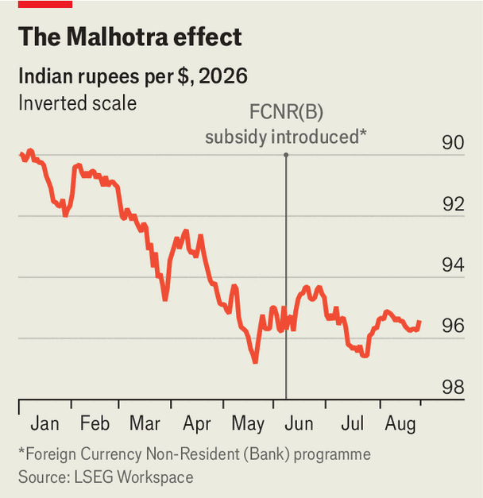

How India’s central bank subsidised the diaspora
The scheme has helped to stabilise the rupee

Aug 27th 2026
“GOVERNOR: THE Silent Saviour”, a Bollywood film released earlier this year, manages to make a hero out of a central banker. It follows a fictionalised version of Sri Venkitaramanan, head of the Reserve Bank of India (RBI) between 1990 and 1992, coping with the fallout from an American war in the Middle East. He persuades the government to let American fighter jets refuel in Mumbai, a sop to the IMF’s largest shareholder, and secretly arranges to have Indian gold flown to Switzerland and Britain as collateral for an IMF loan. In a revision of history, he convinces Manmohan Singh, the reformist finance minister, of the need to dismantle the socialist, growth-sapping Licence Raj.
Sanjay Malhotra, the current governor, does not have the benefit of a sympathetic film-maker. Still, he has had a good war—not least in stabilising the rupee. The currency fell by 4.2% against the dollar in the first month of America’s latest Gulf conflict, a consequence of India’s huge oil-import bill. Since mid-May, however, it has traded sideways. That is partly due to a scheme to attract dollars from India’s 37m-strong diaspora. The RBI’s Foreign Currency Non-Resident (Bank) (FCNR(B)) programme provides subsidised hedging to retail banks on dollar deposits, allowing them to pay higher rates and entice Indians abroad to shift greenbacks to India.

Despite the scheme’s success, Mr Malhotra said on August 14th that it would close at the end of August, a month ahead of schedule. It is expected to have secured around $100bn (2.5% of GDP) for India’s banks. “Flows have been stronger than we expected,” Mr Malhotra told the Financial Express, a newspaper, noting that each dollar had a diminishing marginal benefit. For the diaspora it amounted to a rare free lunch. Although they had to keep the money tied up for three to five years, they could earn 7% a year by shifting their dollars to India, against just 4% on deposits in America. Encouraged by the RBI, Indian banks then used leverage to let them make annual returns of 15-27% with no foreign-exchange risk (but a lot of interest-rate risk).
The RBI has tapped overseas Indians before. Amid the 1991 crisis it launched “development bonds”. In 2013 Raghuram Rajan, its boss then, first devised a subsidised FCNR(B) scheme during the "taper tantrum” in the American Treasury-bond market. Capital streamed out of emerging markets as long-term dollar rates rose.
The disapora’s free lunch comes at the RBI’s expense. Economic theory says that any difference in interest rates between two countries must be equal to the cost of providing a “forward swap” (an agreement to deliver the foreign currency at a specified date). Otherwise arbitrageurs could lock in a risk-free profit by taking the higher (ie, Indian) interest rate and just signing a forward contract, without having to worry about the rupee losing value against the dollar. Instead, the RBI provides the swap for free. That is worth around 2.8 percentage points a year, or $8.4bn over three years on a $100bn book.
The RBI’s foreign-exchange reserves of $717bn compare with $1.2bn or so available to the governor in the Bollywood film. So whereas he resorts to all sort of chicanery to avert catastrophe, India has had no such need during this Gulf war. The scheme was meant to be a circuit-breaker, suggests Sajjid Chinoy of JPMorgan Chase, a bank. India risked falling into a vicious cycle as importers hedged their exposure and investors feared further depreciation. The RBI has bought the country time.
India was facing a third year of balance-of-payments deficit. International investors shunned the country, perceiving that its equities were overpriced and (unlike other Asian emerging markets) offering little gain from artificial intelligence. Flows of foreign direct investment have also been negative, as Indian firms have been keener to deploy capital abroad than vice versa.
Inflows from the FCNR(B) should mean India runs a surplus this year instead. Whether politicians in Delhi can use the time a central banker has bought them to attract investors back remains to be seen. But outside the cinema, it is the politicians who have to be the saviours. ■